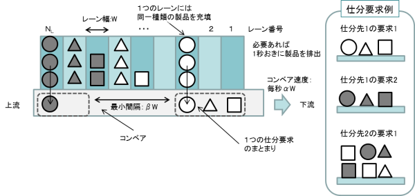

|
自動ピッキングシステム運用計画の最適化ベンチマーク問題
(Ver. 1)
これは旧版になります。最新版は P3-2 (Ver. 2)をご覧ください。 問題概要
製品仕分けを行う物流機器の例として，自動ピッキングシステムがある。
自動ピッキングシステムでは，図1と図2に示すように，各仕分先から仕分要求が与えられると，各レーンに種類別に装填された製品をレーン間で同期を取りながらコンベヤ上に排出し，コンベア上で仕分要求別に製品群をまとめて流すことで，製品の仕分けを行う。
本システムの最適運用計画を得るには，各製品のレーンへの割付問題と，各仕分要求の処理順序やレーンからの製品の排出時刻を決定するスケジューリング問題を同時に考慮しなければならない。
本問題では，2種類の運用計画問題（問題番号「00」と「01」）を提供する。
本問題の初出は文献[1]であるが，現在掲載中のソースコードは文献[3], [5]の定式化に基づいている。

図1：自動ピッキングシステム（文献[1]から引用）
 図2：配送要求の例（文献[1]から引用） 問題の部類・規模（問題番号00の場合）
- 問題のクラス：非線形離散変数最適化問題
- 決定変数の数：925,500（連続：0，離散：925,500）
- 不等式制約条件数：89,075（線形：100，非線形：88,975）
- 等式制約条件数：19,100（線形：10,100，非線形：9,000）
Known Feasible Solutions
| 解法 |
目的関数値 |
制約違反 |
文献 |
報告者 |
解 |
| 合計値 |
許容量 |
| Constraint programming |
4149.5 |
0 |
1.0 × 10-10 |
[4] |
T. Miyamoto |
解†（問題番号00） |
| Constraint programming |
4047.0 |
0 |
1.0 × 10-10 |
[4] |
T. Miyamoto |
解†（問題番号01） |
| — |
4206.0 |
0 |
0 |
— |
— |
解†（問題番号00） |
| — |
4159.0 |
0 |
0 |
— |
— |
解†（問題番号01） |
†取得したファイルを解凍し，ソースコード内の「P3_solution_y.txt」,「P3_data.csv」と差し替えて下さい。
ソースコード
参考文献
| [1] |
電気学会 情報知能システムの新展開とその産業応用調査専門委員会：「産業応用のための最適化ベンチマーク問題集」, 電気学会技術報告 第1287号, 3.4節 (2013) |
| [2] |
飯間等，河野幸弘：「自動ピッキングシステム運用計画ベンチマーク問題」，平成26年電気学会全国大会講演論文集，4-S21-4 (2014) |
| [3] |
飯間等，小熊祐司，河野幸弘：「メタヒューリスティクスのための自動ピッキングシステム運用計画ベンチマーク問題」，スケジューリング・シンポジウム 2014 講演論文集, pp. 201–206 (2014) |
| [4] |
T. Miyamoto, K. Mori, S. Kitamura, and Y. Izui: "Constraint programming model for operational planning and scheduling problem in automatic picking system", Proc. of International Symposium on Scheduling 2015, pp. 163–168 (2015) |
| [5] |
H. Iima, Y. Kawano, and Y. Koguma: "Operational planning and scheduling problem in an automatic picking system as a benchmark", Proc. of the first IEEJ International Workshop on Sensing, Actuation, and Motion Control (SAMCON2015), IS1-2 (2015) |
更新履歴
- Sept. 29th, 2015: Known Feasible Solutionsに新たな解を追加。
- Dec. 1st, 2014: 文献[3]に基づいたソースコードに更新。
- July 18th, 2014: 文献[2]に基づいたソースコードを公開。
|
|
|